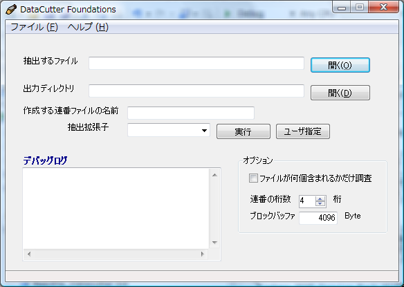
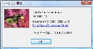
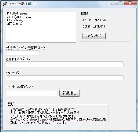
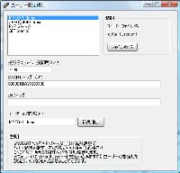
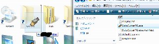

DataCutter Foundations





作者：ω11
メール: mailto:omega11vec@gmail.com
はてな: http://d.hatena.ne.jp/thk/
ライセンス:GPL
(Build20090103)
Version1.1.0 ダウンロード(280KB) ←最新版
Version1.1.0 ソースコード ダウンロード() (プラグインインターフェース含む)
〇用途
バイナリファイルのデータから PNG/OGG/WMV/WAV(RIFF)/AVI(RIFF)/+α を抽出するツールです。
抽出拡張子フォーマットは単純カットであればユーザー拡張が可能です。
プラグイン拡張も可能ですがインターフェースは変更される可能性があります。
oggはファイル終端が不明なのでゴミバイナリがつきます。WMVは今のとこ簡易分割なのでゴミバイナリがつきます。
それをexplorer.exeが無理に解釈してメモリを1G以上よんでお亡くなりになったりする
ことがあるのでそういうファイルは削除してください。
ゴミヘッダ付きoggはwinampで再生するとエラーがでます。
ゴミヘッダがついてもとりあえずバイナリの中の画像を閲覧したり動画がとりあえずみたい人にお薦めです。
〇動作条件
動作には.NET Framework Version 2.0が必要です。インストールしてください。
動作は.NET2.0の動くOS （※）であれば動作すると思いますが保証はできません。
.NETの最新版は3.5です。.NET2.0の下位互換を保ち最新版の2.0になっているので3.5を入れた方が無難でしょう。
ただし.NET3.5はXP以降のOSしか入れられません
※
Windows 2000 Service Pack 3以降;
Windows 98;
Windows 98 Second Edition;
Windows ME;
Windows Server 2003;
Windows XP Service Pack 2以降
Windows Vista
Microsoft .NET Framework Version 2.0
http://www.microsoft.com/downloads/details.aspx?familyid=0856EACB-4362-4B0D-8EDD-AAB15C5E04F5&displaylang=ja
Microsoft .NET Framework 3.5
http://www.microsoft.com/downloads/details.aspx?FamilyID=333325FD-AE52-4E35-B531-508D977D32A6&displaylang=ja
ソースコードから簡単にビルドする方法
参考 [@IT]
DCFGSRC\DataCutter.sln を C:\Windows\Microsoft.NET\Framework\v2.0.50727 にある MSBuild.exe にドラッグすればデバッグ版は生成できます。
-----------------------------------------------
〇更新履歴
[090103 Ver1.1.0]
プラグイン拡張に対応
CrossDaysのPNG/WMV抽出にプラグインで対応
[090102 Ver1.0.1]
endタグのバグを修正
[090101 Ver1.0.0]
ユーザーが拡張子抽出設定をできるようにした
サンプルとしてMPEG1/JPEGに対応（簡易版）
コマンドライン引数起動に対応(Sendtoに対応できるように)
ファイルをウィンドウにドラッグできるように対応
[050112 Ver0.0.2]
RIFF/WAVに対応
RIFF/AVIに対応
.NETスタックウィンドウ廃止
キーボードショートカットの実装
メニューの追加
XPテーマ適用のマニュフェスト付属
連番ファイルの桁数を選べるようにした（1から8桁まで）
最初に作られるゴミファイルを暫定的に削除するようにした
出力フォルダのExistsチェック
[050104 Ver0.01]
ファーストリリース
------------------------------------------------
〇作者の開発環境
Windows Vista SP1
Visual Studio 2005 Pro
.NET3.5
OLD
(Build20090101)
Version1.0.1 ダウンロード(271KB)
Version1.0.0 ソースコード ダウンロード(46KB)
(Build20050112)
Version0.0.2 ダウンロード(21KB)
Version0.0.2 ソースコード ダウンロード(27KB)
(Build20050104)
Version0.0.1 ダウンロード(44KB)
〇バイナリ動作確認プレイヤ
Media Player Classic
http://sourceforge.net/project/showfiles.php?group_id=82303&package_id=84358
〇画像表示確認ソフト
Vix
http://homepage1.nifty.com/k_okada/
Susie
http://www.digitalpad.co.jp/~takechin/
〇バイナリ解析エディタ
Bz
http://www.zob.ne.jp/~c.mos/soft/bz.html
ooo
http://www.vector.co.jp/soft/win95/util/se137933.html
２ファイル以上の差分を表示させてフォーマットヘッダの解析に使う
〇プログラムエディタ
xyzzy
http://www.jsdlab.co.jp/~kamei/
TeraPad
http://www5f.biglobe.ne.jp/~t-susumu/
〇etc
mp3info
http://win32lab.com/fsw/mp3infp/
Cygwin
http://www.cygwin.com/
〇ファイルフォーマット
[全般]
http://www.wotsit.org/
[Ogg]
http://www.xiph.org/ogg/vorbis/docs.html
aoTuV aoTuV(crossdaysで使用っぽい)
[PNG]
http://www.club-e.co.jp/~ty/unix/png/sample.html
http://www.libpng.org/pub/png/libpng.html
http://www.libpng.org/pub/png/
[WMV]
http://www.microsoft.com/windows/windowsmedia/format/asfspec.aspx
http://www.microsoft.com/windows/windowsmedia/format/
http://www.microsoft.com/japan/windows/windowsmedia/howto/articles/AddingSupport.aspx
[RIFF/AVI]
[RIFF/WAV]
〇IDE
SharpDevelop @ic#code
http://www.icsharpcode.net/OpenSource/SD/